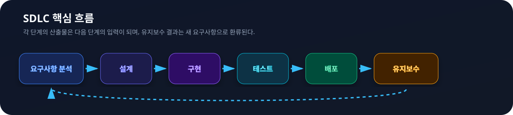
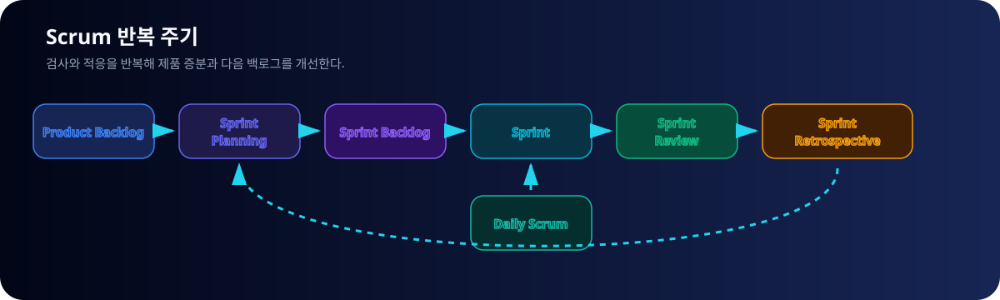
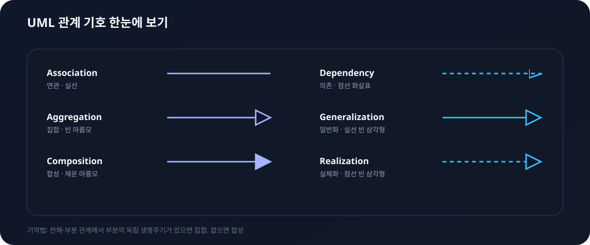
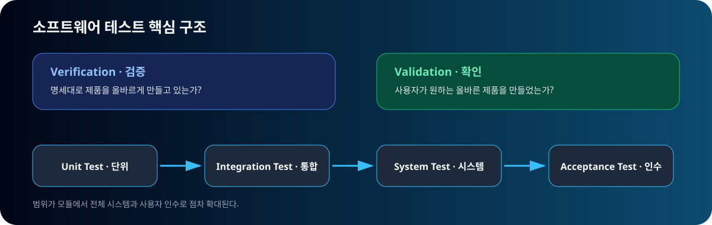
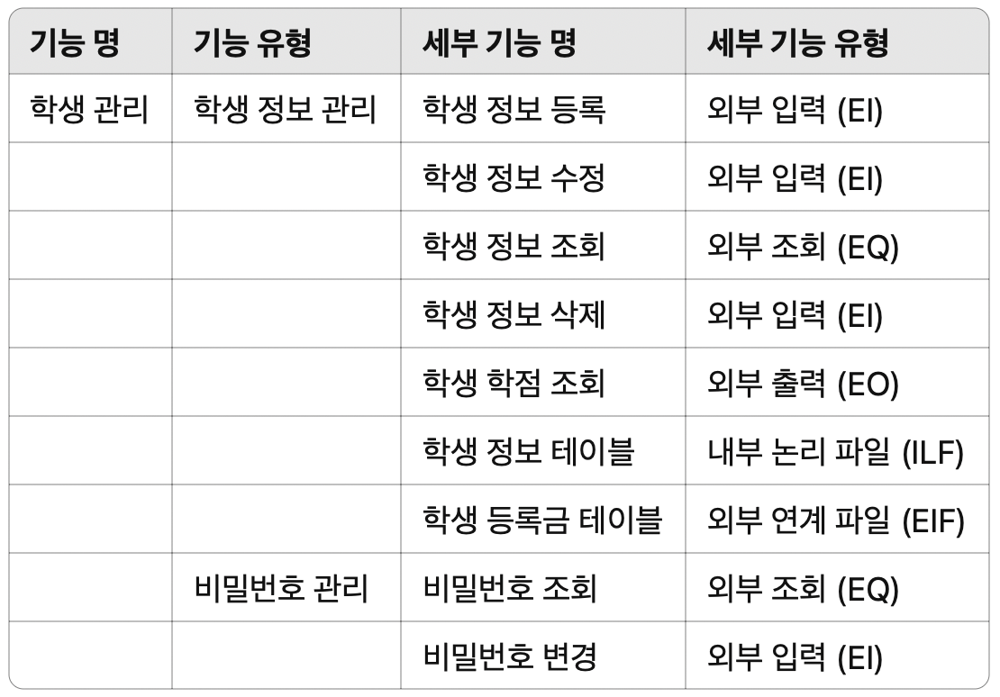

반드시 외울 순서
- SDLC: 요구사항 분석 → 설계 → 구현 → 테스트 → 배포 → 유지보수
- 스크럼: 제품 백로그 → 계획 → 스프린트 백로그 → 스프린트 → 리뷰 → 회고
- 테스트: 단위 → 통합 → 시스템 → 인수
- 기능점수: EI·EO·EQ·ILF·EIF
문제를 풀다 막힌 개념을 원본 자료 기반 노트·개념사전·16쌍 비교표에서 빠르게 확인하세요.





문제 풀이 전후에 순서와 함정만 빠르게 회수하세요.
일부 보충: 일반적인 소프트웨어공학 관점